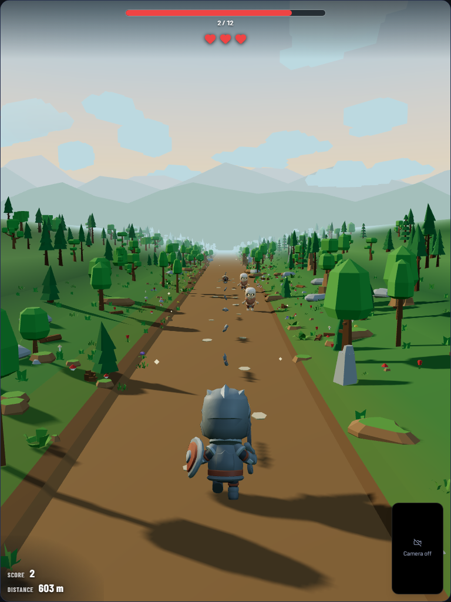
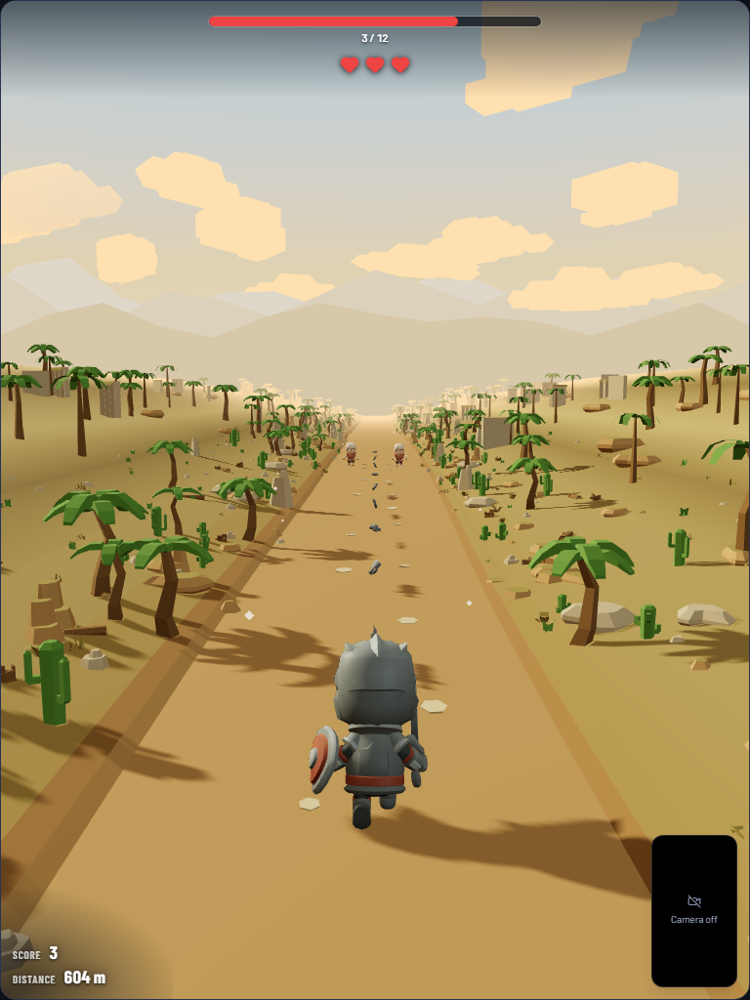
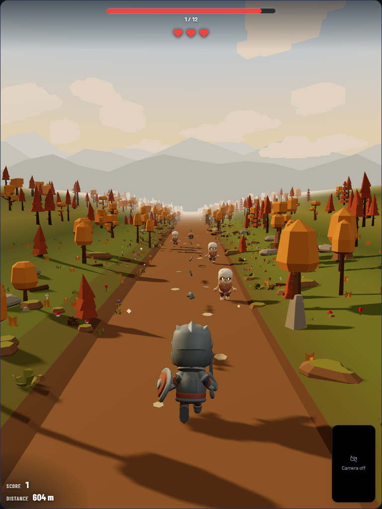
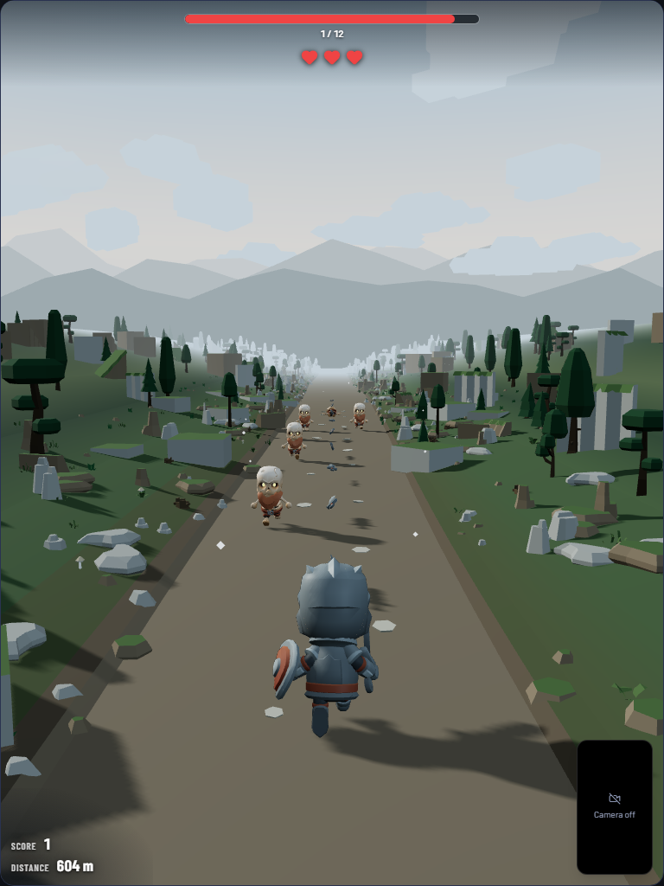

วิธีการเล่น (Gameplay & Pose Controls)
การควบคุมเกมด้วยท่าทางร่างกายผ่านกล้อง Webcam ไร้อุปกรณ์สวมใส่ (Markerless AI)
1. เอนตัวหรือก้าวสลับเลน (Lateral Movement)
การกระทำ: เอนลำตัวหรือสไลด์ก้าวไปทางซ้าย/ขวา
การตรวจจับ: MediaPipe วิเคราะห์จุดไหล่กึ่งกลาง (Mid-shoulder x-offset) เทียบ Baseline เพื่อสั่งให้ตัวละครสลับระหว่าง เลนซ้าย - เลนกลาง - เลนขวา อย่างแม่นยำ ป้องกันอาการวูบวาบ
2. วิ่งเหยาะอยู่กับที่เพื่อโจมตี (Jog in Place / High Knees)
การกระทำ: วิ่งยกเข่าสลับข้างต่อเนื่อง (Jogging in place)
การตรวจจับ: วัดความต่างความสูงของหัวเข่า (Knee Delta) และจังหวะก้าว (Cadence SPM) เมื่อถึงเกณฑ์จะสั่งให้ตัวละคร ขว้างใบมีดโจมตีศัตรู ในเลนตรงหน้า พร้อมส่งเสริมการออกกำลังกายแบบคาร์ดิโอ
3. กฎการเอาชีวิตรอดและคะแนน (Survival & Score)
หัวใจ 3 ดวง (3 HP): ชนศัตรูลด 1 ดวง และมีระยะอมตะกระพริบชั่วคราว (Invulnerability)
ระบบสำรอง (Fallback): รองรับปุ่มลูกศรคีย์บอร์ด & Spacebar เพื่อความสะดวกในการทดสอบ

ระบบศัตรู (Enemy & Combat Mechanics)
ระบบศัตรูโครงกระดูก 3D Rigged และเทคนิค Optimization ระดับสูง
1. พฤติกรรมและการเกิดของศัตรู (Spawning Logic)
เส้นทางการเดิน: ศัตรูเกิดข้างหน้าตามเลน (LCG Deterministic Seed) และเดินตรงมุ่งหน้าหาผู้เล่น (+z) โดยไม่มีการเปลี่ยนเลนกะทันหัน เปิดโอกาสให้ผู้เล่นประเมินว่าจะหลบหรือโจมตี
2. การเพิ่มประสิทธิภาพการจำลอง (Dynamic Rigging Cap)
Affordable Skinned Meshes: ใช้โมเดลโครงกระดูก 3D พร้อมกระดูกขยับได้จริง โดย คำนวณ AnimationMixer เฉพาะศัตรูที่อยู่ใกล้ผู้เล่นที่สุด (Nearest Enemies) ส่วนศัตรูที่อยู่ไกลจะค้างท่าวิ่งไว้ ทำให้คงเฟรมเรต 60 FPS ได้ลื่นไหลบนทุกอุปกรณ์
3. การกำจัดและแอนิเมชันความตาย (Combat & Ragdoll Decay)
1-Hit Kill: ขว้างอาวุธโดนศัตรู = กำจัดทันที
แอนิเมชันความตาย: ศัตรูล้มฟุบลงกับพื้น (Death Action) นอนนิ่ง 2.2 วินาที ก่อนค่อยๆ จมลงใต้ผืนทราย/ดิน 1.1 วินาทีอย่างนุ่มนวล โดยไม่ทำให้เกิดปัญหาการจัดเรียงความโปร่งใส (Sorting Artifacts)

ระบบด่าน (Stage Progression & Biomes)
การผจญภัยผ่าน 4 ภูมิประเทศพร้อมการไล่ระดับความยากและการเปลี่ยนฉากไร้รอยต่อ
1. โครงสร้าง 40 สเตจและ 4 สภาพแวดล้อม (4 Biomes)
ลำดับการปลดล็อก: Whispering Pines (ป่าสน) → Emberfall (ใบไม้เปลี่ยนสี) → Grey Crags (หน้าผาหิน) → Sunwash Dunes (ทะเลทราย)
การแบ่งสเตจ: 10 ด่านต่อ Biome (รวม 40 สเตจ) เลือกความยากได้ 3 ระดับ: ง่าย (Easy), ปกติ (Normal), ท้าทาย (Hard)
2. การเปลี่ยนผ่านฉากแบบไร้รอยต่อ (Seamless Crossfade)
Palette Dissolve: วิ่งทุกๆ 700 เมตร จะมีช่วงผสมสีฉาก 160 เมตร ท้องฟ้า หมอก แสงแดด และผืนดิน ค่อยๆ ไล่เฉดสีกลมกลืนโดยไม่ต้องตัดเข้าหน้าโหลด (Zero Loading Screens)
Scatter Swap: โมเดลประกอบฉาก (ต้นไม้, หิน, กระบองเพชร) สลับชุดอย่างแนบเนียนที่จุดกึ่งกลาง
3. เงื่อนไขการผ่านด่านและการบันทึกสถิติ (Clear & Metrics)
Goal Kills: แต่ละด่านมีโควตากำจัดศัตรูที่จะเพิ่มขึ้นตามเลขด่านและความยาก
Health Metrics: บันทึกจำนวนการก้าว/ยกเข่า (Cadence), ระยะทาง, แคลอรี่ และเวลา เพื่อแสดงผลประเมินสุขภาพหลังจบเกม

